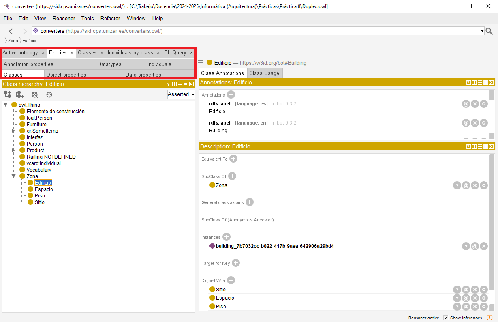
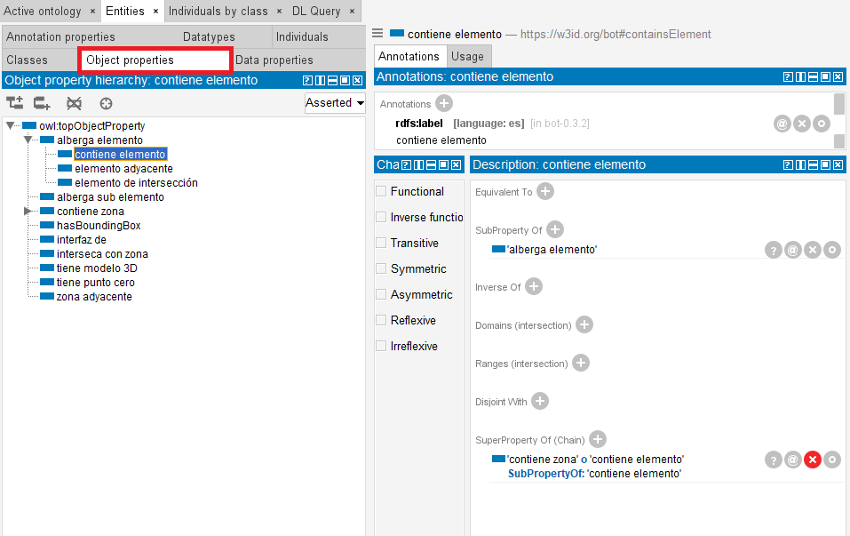
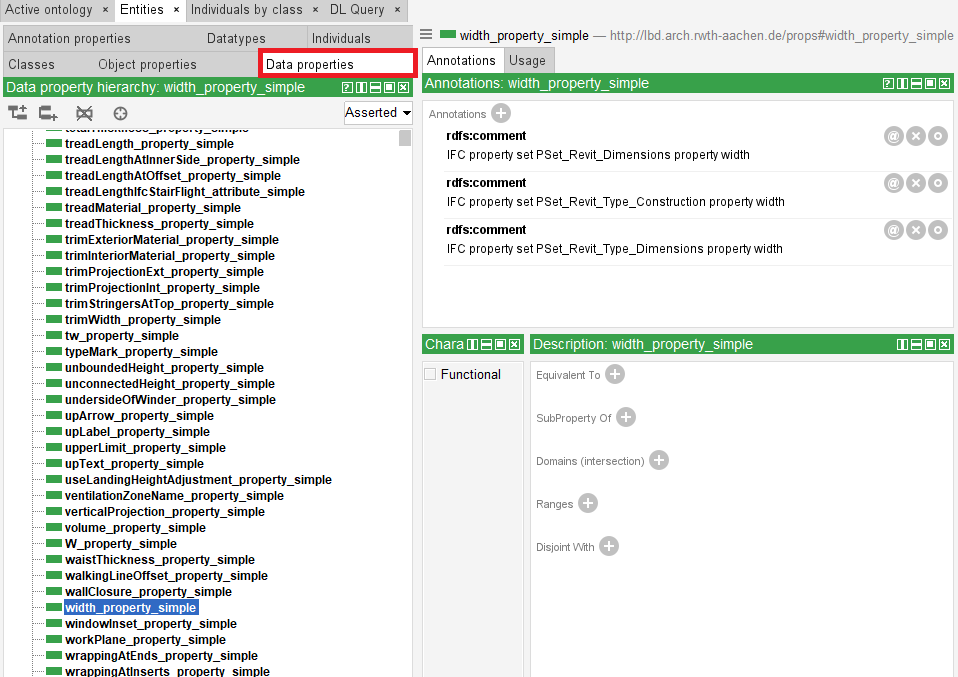
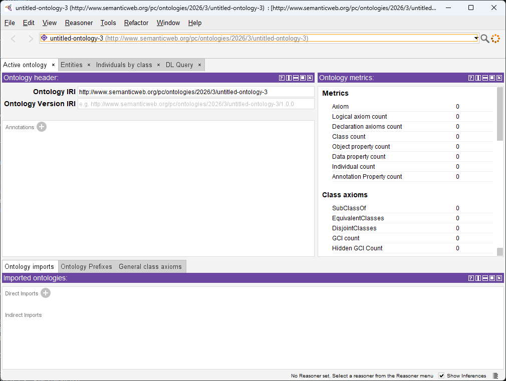

Práctica 8: BIM semántico
Ejercicio 2: abrir la ontología en Protégé
Para abrir Duplex.owl usaremos Protégé, un editor de ontologías gratuito y disponible para varios sistemas operativos. No requiere una instalación compleja: basta con descargar el archivo comprimido, descomprimirlo y ejecutar la aplicación.
La interfaz puede cambiar ligeramente según la versión de Protégé, pero la idea general es siempre la misma: pasar de la estructura conceptual a los elementos concretos del edificio.
Una vez abierto el fichero, encontrarás varias vistas desde las que puedes navegar por la ontología. Debajo del título de la ontología, converters, puedes encontrar una pestaña llamada Entities que te permitirá acceder a las siguientes categorías:
- Classes, para ver la jerarquía de clases del dominio.
- Object properties, para ver propiedades cuyo valor es otro objeto o individuo.
- Data properties, para ver propiedades cuyo valor es un dato literal.
- Individuals, para ver las instancias concretas del modelo.
La Figura 4 muestra el resultado de seleccionar Clases y, concretamente, Edificio. Podeis observar cómo la interfaz nos muestra que Edificio es una subclase de Zona.

Puedes encontrar una pequeña introducción a la interfaz de Protégé en el siguiente vídeo, aunque no está orientado a nuestro mismo modelo, por lo que no es necesario seguirlo al pie de la letra:
Si faltan importaciones
También debes tener en cuenta que muchas entidades tienen etiquetas en varios idiomas. Dependiendo de la configuración de tu equipo, Protégé puede mostrar nombres en castellano o en inglés. Por ejemplo, la clase Edificio ‐ http://w3id.org/bot/Building tiene etiquetas Building, Edificio, etc. En este guion se asume que las etiquetas se muestran en castellano siempre que sea posible.
Qué debes localizar
Dentro de la ontología, localiza:
- La clase que permite representar las ventanas.
- Las propiedades que representan la altura y la anchura de una ventana.
- Una ventana concreta y los valores de sus propiedades.
Comprueba además si esos valores coinciden con los que viste en el visor IFC durante el ejercicio anterior.
Solución orientativa: clases

Solución orientativa: propiedades


Solución orientativa: individuos

Ejercicio 3: razonamiento e inferencia
Una de las ventajas de trabajar con ontologías es que no solo podemos leer datos explícitos, sino también inferir información nueva a partir de la estructura del modelo y de las restricciones definidas en la ontología.
Para ello, activa un razonador desde el menú superior Reasoner. En esta práctica se recomienda utilizar HermiT. Inicia el razonador mediante Reasoner > Start reasoner. Una vez cargado, podrás abrir la pestaña DL Query para lanzar consultas sobre clases e individuos.
Si en algún momento actualizamos la ontología, tendremos que utilizar la opción Synchronize reasoner para que el razonador actualice su información y pueda responder a las consultas correctamente.
Consultas propuestas
A través de la pestaña DL Query, recupera las instancias de la clase que representa las ventanas. Pinchando en alguna de ellas, puedes ver los valores de las propiedades (tanto los originales como los inferidos por el razonador, si los hubiera).
Con el razonador activo, realiza las siguientes comprobaciones:
- Recupera las instancias de la clase que representa las ventanas.
- Recupera las superclases de esa clase.
- Recupera las instancias de alguna de esas superclases para comprobar si el razonador también devuelve instancias indirectas.
- Vuelve a consultar las instancias de la clase de ventanas y haz clic en el símbolo
?de alguna de ellas para ver al menos una explicación.
Pista
En muchas instalaciones, las consultas se escriben con los nombres cortos en inglés, por ejemplo Window, aunque en la interfaz veas etiquetas en castellano.
Ejemplo orientativo: consulta sobre escaleras


Ejercicio 5: provocar una inconsistencia
Si una ontología se vuelve inconsistente, el razonador ya no puede trabajar correctamente con ella. En ese caso, Protégé muestra un aviso y permite abrir una explicación para entender qué axiomas están entrando en conflicto.
En este ejercicio vamos a provocar una inconsistencia de forma controlada. La idea es declarar como funcional la propiedad que representa la altura de una ventana y, después, asignar a una misma ventana dos valores distintos para esa altura.
En una ontología, una propiedad funcional es una propiedad que puede tener como máximo un valor para cada individuo. Por ejemplo, si la propiedad que representa la altura de una ventana se declara funcional, una misma ventana no debería tener dos alturas distintas. Si añadimos dos valores incompatibles, el razonador detectará que el modelo contiene una contradicción.
Pasos sugeridos
- Localiza la propiedad de datos que representa la altura.
- Márcala como Functional.
- Busca una ventana concreta en Individuals.
- Añade una segunda afirmación de tipo Data property assertion con un valor distinto del original, por ejemplo
1234. - Sincroniza el razonador y observa el error de inconsistencia.
Recomendación
Haz este ejercicio sobre una copia de trabajo del fichero si quieres conservar Duplex.owl sin cambios al terminar la práctica.
Solución orientativa: inconsistencia


Descarga
BIMvision
Puedes descargar BIMvision desde su página oficial. Tendrás que introducir tu correo electrónico para recibir el enlace de descarga y aceptar los términos de servicio. Una vez hecho recibirás un correo con el enlace para descargar el instalador. Sigue las instrucciones de instalación para completar el proceso. Al ejecutar el programa por primera vez, deberías ver algo como esto:

Protégé
Puedes descargar Protégé desde su página oficial. En la sección de descargas, elige la versión que corresponda a tu sistema operativo (Windows, macOS o Linux). Descarga el archivo comprimido y descomprímelo en una ubicación de tu elección. Ten en cuenta que Protégé no requiere instalación adicional, por lo que puedes situar la carpeta descomprimida en una ubicación que recuerdes fácilmente. Para ejecutar Protégé, simplemente abre la carpeta descomprimida y haz doble clic en el archivo Protege.exe (en Windows). Al abrir Protégé, deberías ver una pantalla de bienvenida similar a esta:
